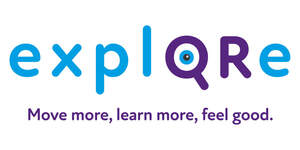

Trade Mark Journal No.2025/048 28 November 2025
UK00004293276 12 November 2025 (28,35,39,41,44)

- Class 28
- Sports games; Sports equipment.
- Class 35
- Promotion of sports competitions and events.
- Class 39
- Sightseeing [tourism].
- Class 41
- Education; Vocational education; Health education; Education and training; Academies [education]; Education and instruction; Education services; Education, teaching and training; Education and training services; Education and instruction services; Teaching of diet education; Provision of education and training; Physical education; Education academy services for teaching languages; Education services relating to vocational training; Education information; Primary education services; Adult education services; Residential education courses; Primary education services relating to literacy; Physical education instruction; Physical education services; Sports education services; Physical health education; Online education services; Provision of physical education; Management education services; Education services relating to health; Education services relating to nutrition; Educational services provided by institutes of higher education; Secondary school educational services; Education, entertainment and sport services; Education, entertainment and sports; Organization of education competitions; Educational services provided by institutes of further education; Education in movement awareness; Organization of competitions [education or entertainment]; Competitions (Organization of -) [education or entertainment]; Organization of competitions for education or entertainment; Education services relating to sports; Educational and training services relating to healthcare; Leisure services; Leisure park services; Providing leisure and recreation facilities; Holiday centre entertainment services; Entertainment, sporting and cultural activities; Sporting and recreational activities; Recreation services; Holiday camp amusement centre services; Organisation of recreational activities; Sports entertainment services; Recreational facilities; Sea-life centres [recreational]; Wildlife centre services [for recreational purposes]; Amusements; Corporate hospitality (entertainment); Social club services for entertainment purposes; Entertainment services in the nature of arranging social entertainment events; Recreational park services; Entertainment services relating to sport; Camp services (Holiday -) [entertainment]; Holiday camp services [entertainment]; Recreational services; Entertainment in the nature of a water park and amusement center; Sports activities; Recreation and training services; Providing online entertainment in the nature of fantasy sports leagues; Entertainment; Amusement services; Entertainment services in the nature of organizing social entertainment events; Amusement centres; Provision of recreational activities; Entertainment club services; Club entertainment services; Club services [entertainment]; Sports and fitness services; Recreational services relating to hiking; Corporate entertainment services; Recreational services relating to back-packing; Recreational services for the elderly; Provision of visitor attractions for entertainment purposes; Sporting and cultural activities; Cultural and sporting activities; Entertainment services in the nature of sporting events; Club recreation facilities (Provision of -); Gaming services for entertainment purposes; Arranging group recreational activities; Providing facilities for recreation; Providing recreation facilities; Organisation of group recreational activities; Entertainment services relating to the playing of golf; Organisation of entertainment activities for summer camps; Entertainment services in the nature of competitions; Organisation of events for cultural, entertainment and sporting purposes; Exhibition services for entertainment purposes; Entertainment in the nature of golf tournaments; Provision of entertainment facilities in hotels; Adventure playground services; Entertainment services for children; Sports and fitness; Cultural activities; Organisation of entertainment services; Sporting activities; Recreation facilities (Provision of -); Provision of recreation facilities; Provision of facilities for recreation; Providing recreational facilities; Physical fitness centre services; Providing fitness and exercise facilities; Recreational camp services; Health and wellness training; Health club services [health and fitness training]; Health and fitness training; Health and fitness club services; Health club [fitness] services; Provision of educational health and fitness information; Health club services; Health club services [exercise]; Physical fitness education services; Provision of educational services relating to health; Providing health club and gymnasium services; Education services relating to physical fitness; Movement tuition for pre-school children; Sport camps; Sports coaching; Sports training; Training in sports; Instruction in sports; Coaching in the field of sports; Sports club services.
- Class 44
- Health care; Mental health services; Health counseling; Public health counseling; Providing health information; Health-care; Health advice and information services; Information relating to health; Preparation of reports relating to health care matters; Health-care services; Exercise facilities for health rehabilitation purposes (Provision of -).
The Go Well Community CIC